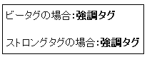

キーワードにつける強調タグのＳＥＯ効果
記事を書く際には強調したいキーワードに強調タグをつけるといいらしいです。たとえば、「強調タグ」を強調したいばあいはこんなタグで囲んじゃいます。
<strong>強調タグ</strong>
そうするとこんな感じになります。
強調タグ
強調されたキーワードは検索ロボに認識されやすくなるみたいでＳＥＯ的にいいみたいです。他にも単に太字にするためのタグや打消し線もあるようですが、そちらのタグの方は主に人間用なので、検索スパイダー的にはあまり関係ないようです。
強調タグのストロングと太字ボールドのＳＥＯ違い
見た目的には強調タグのストロングタグ</strong>と太字のビータグ</b>はあまりかわりませんが、ＳＥＯ的な意味合いはまったく違ったものになるのでキーワードには強調タグを使うといいです。

ビータグのビーはボールド（太い）のビーではないかなと思います。
ただ、強調というのは相対的なものなので、いたるところ強調されていたら効果が薄まると思います。一ページに一個ぐらいがちょうどいいんじゃないでしょうか。
わたしの感じだと、強調タグでくくったものをさらに大文字にして、そのページではほかのストロングタグを一切使わなければ、わりと効果があるような気がします。
強調タグはＳＥＯ的にはあまり効果がなくなってきたということをしばしば耳にしますが、マイナーなキーワードだと強調タグを用いることによってかなり上位に表示される確率が高いと思います。
その際にも関連するキーワードをまわりに配置するといいです。ほかにも強調的な見出しのＨ２タグがありますが、見出しを連発するよりも強調タグとの組み合わせで使用するとＳＥＯ的な効果もあるのかなと思います。
関連記事
- ブログタイトルとＳＥＯ
ブログのアカウントを取得した後、ブログタイトルを何にするかはとても重要です。ブログタイトルを適切に記入することはＳＥＯ的に大切な要素ではありますが、一番重要であるにもかかわらず一番先に決めなくてはいけ... - 強調タグのストロング効果ＳＥＯ
ＳＥＯ的な意味として、強調タグのストロングタグと太字のＨＴＭＬタグでは天と地ほどの違いがあるといわれているようです。でも、ぶっちゃけ、あんまり違いがないんじゃないのかなって気もしちゃいます。 強調タグ... - 無料ブログの相互リンクＳＥＯ効果
ブログ作成がひととおり終わったら、相互リンクに登録してみるといいようです。このブログもひとつも登録していなかったので登録してみようとは思うのですがいまいち面倒くさいです。相互リンクというのは、リンクす... - ブログ作成にお役立ちhtmlタグ
ブログ作成の際に使っておくと何かとお役立ちなhtmlタグにはいろいろありますが、以前はストロングタグと太字のフォントタグのＳＥＯ的な違いについてあれこれと記事にしてみました。 強調タグのストロング効...